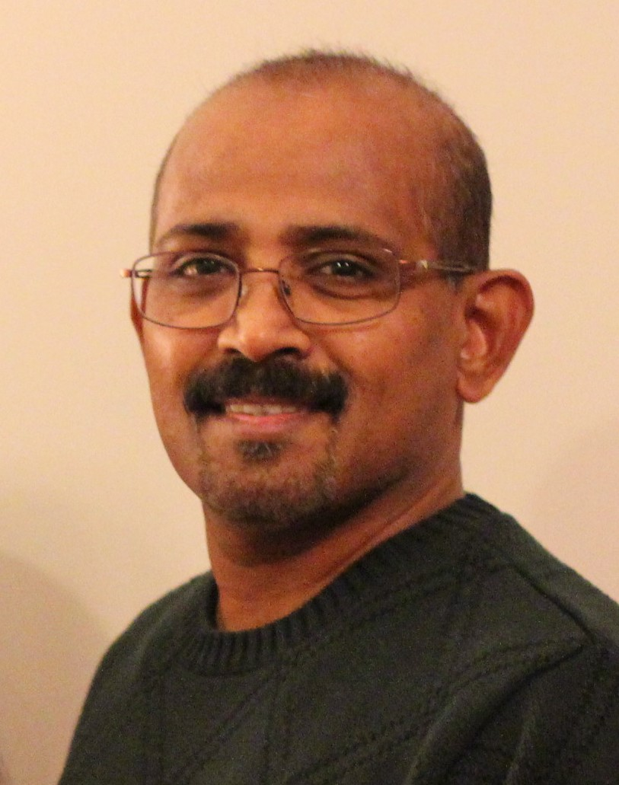

About Me

I am Jay Pillai, working as a software professional having several years of experience in development and project management. Currently working in a multinational company, spanning four continents. I have worked on several technologies primarily focused on financial solutions.
My key strength being determination and strong desire to learn new skills, I have acquired knowledge in several technologies though out my career. I was fortunate to be part of a company which gave me opportunity to work on highly challenging projects. I have always been working in a constantly changing environment, which gave me lot of strength and adaptation skills.
I love being outdoors, jog on a trail or doing some gardening. I have a softer side for paw-friends. One of my passions is going for an early morning motorcycle ride on a quite week-end. Love photography. Now I am on a mission to acquire some newer web development skills.